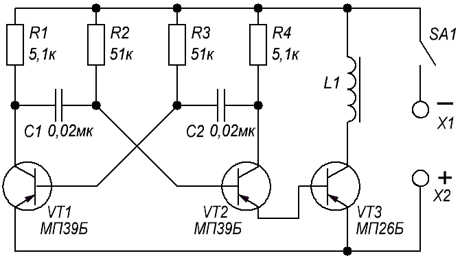
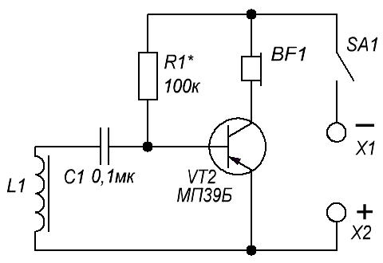

Электронная "мина"
Воспользовавшись принципом индуктивной связи, можно построить интересное устройство для проведения соревнований по поиску «мин» — замаскированных в земле или в помещении миниатюрных передатчиков, работающих на звуковой частоте.
Каждая такая «мина» представляет собой мультивибратор, работающий на частоте примерно 1000 Гц. В эмиттерную цепь транзистора VT2 (рис. 1) мультивибратора включен усилитель мощности на транзисторе VT3 с катушкой индуктивности L1 в качестве нагрузки. Вокруг нее образуется электромагнитное поле звуковой частоты.

Рис. 1 - Схема мины
Это поле улавливает датчик приемника — катушка L1 (рис. 2). Колебания звуковой частоты с нее подаются на каскад усиления на транзисторе VT1. Прослушивается усиленный сигнал через головные телефоны BF1. Чувствительность приемника такова, что звук «мины» слышен на расстоянии до метра между катушками индуктивности.

Рис. 2 - Схема приемника для поиска мины
Транзисторы мультивибратора и приемника могут быть серий МП39 — МП42 с возможно большим коэффициентом передачи тока, транзистор усилителя мощности — серий МП25, МП26.
Катушка «мины» намотана на каркасе внутренним диаметром 8 и длиной 30 мм и содержит 800 витков провода ПЭВ-1 0,1. Внутрь каркаса вставлен стержень таких же габаритов из феррита 400НН (можно 600НН).
Катушка приемника содержит 3000 витков провода ПЭВ-1 0,12, намотанных на стержне диаметром 8 и длиной 80...100 мм из феррита 400НН. Источник питания — батарея 3336, но «мина» может работать и от одного элемента 373, 343.
Детали «мины» монтируют на плате, которую вместе с источником питания крепят внутри корпуса возможно меньших габаритов. Там же размещают катушку индуктивности. Выключатель укрепляют на боковой стенке — пользуются им непосредственно перед маскировкой «мины» и после ее обнаружения.
Детали приемника, кроме катушки индуктивности, кнопочного выключателя и головных телефонов, монтируют также в небольшом корпусе и укрепляют его вблизи одного из концов деревянной рейки примерно метровой длины. Рядом с корпусом на рейке устанавливают выключатель, а на противоположном конце рейки крепят катушку. Головные телефоны следует подключать либо подпайкой проводников от них к соответствующим точкам приемника, либо через разъем и вилку. Нужно заметить, что головные телефоны могут быть как высокоомные, типа ТОН-1, так и низкоомные, например миниатюрные ТМ-2А. С первыми из них получается большая чувствительность, но меньшая громкость, со вторыми — наоборот, большая громкость, но меньшая чувствительность. При проверке работы устройства подбором резистора R1 в приемнике добиваются максимальной громкости звука.